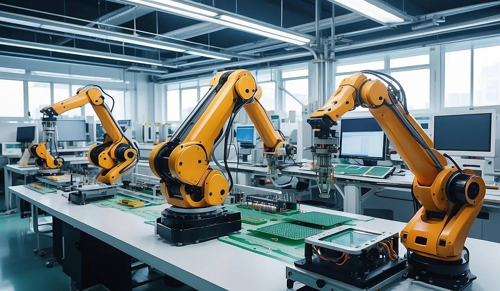
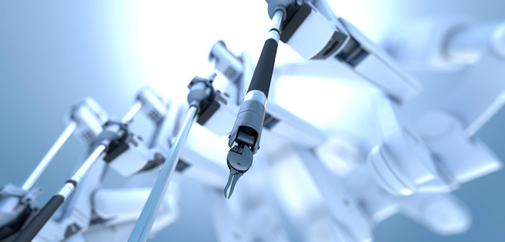
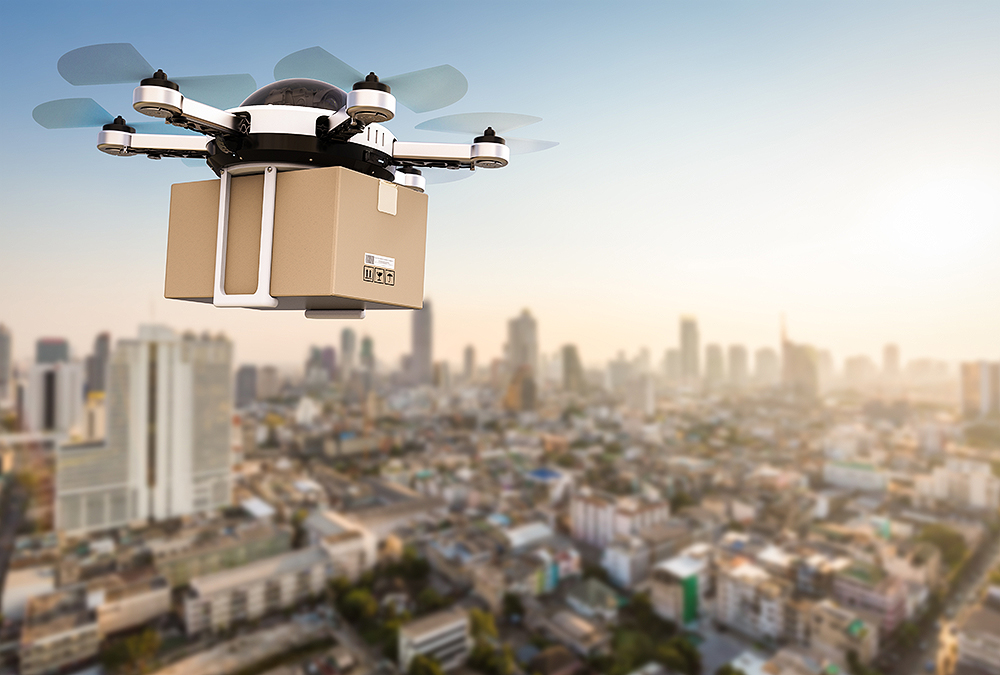

About Robotics
Robotics is a branch of engineering and science that deals with the design, construction, operation, and use of robots. Robots are machines that can be programmed to perform specific tasks, either autonomously or under human guidance.
Applications of Robotics
Robotics is revolutionizing industries like manufacturing, healthcare, and space exploration. Robots are used in factories for assembling products, in hospitals for performing surgeries, and even on Mars for scientific exploration.
About Drones
Drones, also known as unmanned aerial vehicles (UAVs), are aircraft that can be remotely controlled or fly autonomously using pre-programmed flight plans. They are widely used in various fields such as surveillance, delivery, and photography.

Future of Drones
The future of drones includes advancements in autonomous delivery systems, aerial mapping, and even passenger transport. As technology improves, drones are expected to play a key role in smart cities and disaster management.
